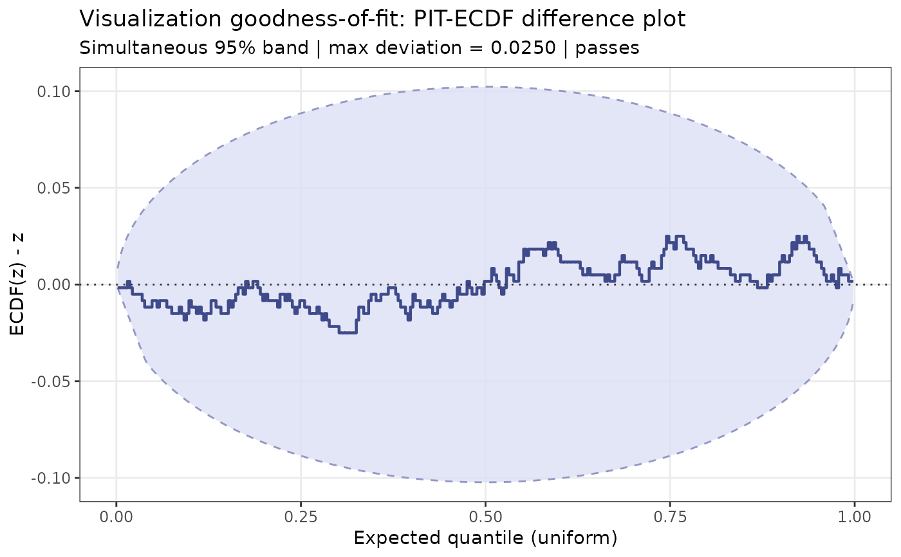

Goodness-of-Fit Test for Visualization PIT Values
viz_gof.RdTests whether a set of PIT values (from pit_kde(), pit_histogram(), or
pit_qdotplot()) is consistent with the uniform distribution on \([0,1]\),
using simultaneous ECDF confidence bands. Non-uniformity indicates that the
visualization is misleading — it does not faithfully represent the
distribution of the data.
Arguments
- pit
Numeric vector of PIT values in \([0,1]\) (e.g. from
pit_kde(),pit_histogram(), orpit_qdotplot()).- prob
Nominal simultaneous coverage probability for the confidence band (default 0.95).
- K
Integer. Number of evaluation points on \((0,1)\) for the ECDF comparison. If
NULL, usesmin(length(pit), 1000).- n_sim
Integer. Number of Monte Carlo simulations used to calibrate the band. Default 1000. Increase for smoother results.
Value
An S3 object of class "viz_gof" with components:
pitThe input PIT values.
passesLogical. TRUE if the ECDF lies entirely within the confidence band (visualization passes the GoF test).
KNumber of evaluation points used.
probNominal coverage probability.
ecdf_valuesNumeric vector of ECDF values at the
Kpoints.zEvaluation points (expected quantiles under uniformity).
lowerLower band boundary at each evaluation point.
upperUpper band boundary at each evaluation point.
max_deviationMaximum |ECDF(z) - z| over all evaluation points.
gammaCalibrated gamma used for the band.
Details
The simultaneous bands use the Sailynoja, Burkner & Vehtari (2022) calibration method: a scaled Brownian bridge envelope \([t \pm \gamma \sqrt{t(1-t)/n}]\) where \(\gamma\) is determined by Monte Carlo simulation to achieve the desired simultaneous coverage.
References
Sailynoja, T., Johnson, A., Martin, R., & Vehtari, A. (2025). Recommendations for visual predictive checks in Bayesian workflow. arXiv:2503.01509.
Sailynoja, T., Burkner, P.-C., & Vehtari, A. (2022). Graphical test for discrete uniformity as a faster alternative to the Kolmogorov-Smirnov test. Statistics and Computing, 32, 32.
Examples
set.seed(42)
# Should pass: PIT from a well-calibrated KDE of normal data
y <- rnorm(300)
pit <- pit_kde(y)
result <- viz_gof(pit)
print(result)
#> [OK] Visualization GoF test PASSES (prob = 95%, max deviation = 0.0250)
#> The visualization appears faithful to the data distribution.
plot(result)

# Should potentially fail: KDE on bounded Beta data without bounds correction
y_beta <- rbeta(300, 2, 5)
pit_bad <- pit_kde(y_beta) # no bounds = boundary bias
result_bad <- viz_gof(pit_bad)
print(result_bad)
#> [OK] Visualization GoF test PASSES (prob = 95%, max deviation = 0.0350)
#> The visualization appears faithful to the data distribution.